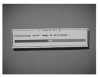

Operating Documentation
Direction 5133330-3, Rev# 14
Signa EXCITE HD 3.0T Service Methods
Module Version 1.0, Version Date 5/15/07
Operating Documentation |
| Required Persons | Preliminary Reqs | Procedure | Finalization |
|---|---|---|---|
| 1 | Not Applicable | Not Applicable | Not Applicable |
| Last Update | 04/03/2006 |
| Condition | Reference | Effectivity |
|---|---|---|
If this is not a new install, perform a SaveInfo of all system setting before begging the Software Install. | - | - |
| ||||
The software load can be corrupted if the following conditions are not
done:
| ||||
Insert the MR PC LINUX CD (current revision) into the CD drive.
Reboot the computer
| ||||
The Proper OS Load command must be entered in order for the mouse to
be detected and for foreign keyboards. At the Boot prompt type the following
command based on Keyboard type:
| ||||
At the boot: prompt type GEHC-MR<Enter>.
The OS software load will take about 13 minutes. After approximately 90 seconds Illustration 1 will appear
Illustration 1: Transferring Install Image to the Hard Drive

After 2 minutes Illustration 2 will appear:
Illustration 2: Starting Install Process

Remove the CD from the drive after the drawer opens. Do not install the Applications CD at this time!
When OS Software is properly loaded, Illustration 3 will appear:
Illustration 3: Complete

Hit <enter> to continue.
After hitting enter the PC will reboot.
A terminal window will appear after 2 minutes.
OS software load is now complete, Proceed to MR_APPS Software Load.
No finalization steps.